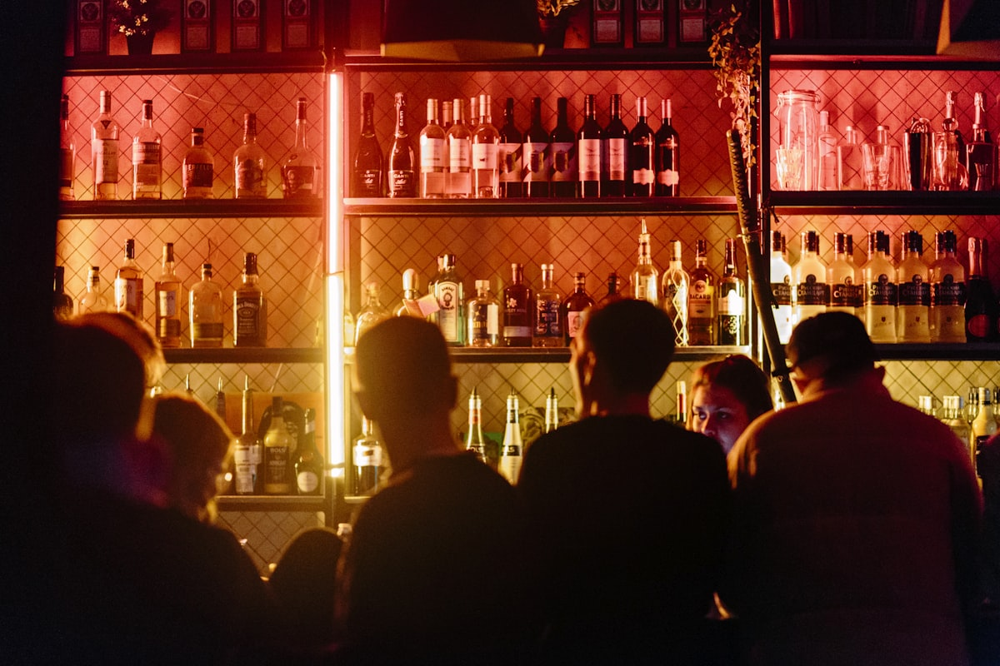

From pioneering the first Black-owned brick-and-mortar brewery in Georgia to establishing Charlotte's first Black-owned distillery, Clarence and Donnica Boston are reshaping craft culture.
Hippin' Hops was born out of a relentless passion for craft brewing, high culinary standards, and inclusive community building. Founded by husband-and-wife team Clarence and Donnica Boston, the brand made national headlines as Georgia's first Black-owned brick-and-mortar craft brewery.
A North Carolina native, Clarence Boston envisioned returning to the Carolinas to create something truly groundbreaking in Charlotte: a "brew-stillery" uniting small-batch craft beer brewing with on-site craft spirit distilling under one roof.
Situated at 650 E. Brooklyn Village Avenue, Hippin' Hops Brewstillery proudly stands as Charlotte's first Black-owned distillery, adding a vital new chapter to the cultural renaissance of Uptown Charlotte's historic Second Ward.

Every brew and distilled spirit is crafted with meticulous attention to detail. We mash, ferment, distill, and age on-site using premium grains, authentic fruits, and pure botanicals.
Instead of typical pub snacks, we paired our beverages with fresh coastal seafood: flame-baked garlic butter oysters, loaded crab and crawfish rolls, and golden cornmeal catfish.
We create a space where everyone feels at home: pairing live jazz and soulful DJ tracks with craft beer discovery, gameday watch parties, and vibrant patio gatherings.